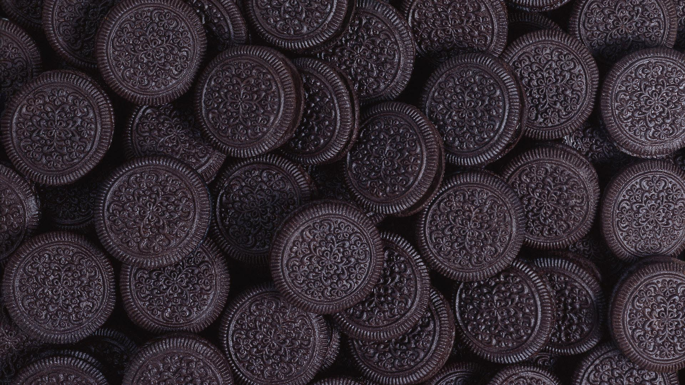

Cookies

Description
What's better to enjoy with milk than this!
- 1 cup softened butter
- 1 cup white sugar
- 1 cup brown sugar
- 2 eggs
- 2 teaspoons vanilla extract
- 1 teaspoon baking soda
- 2 teaspoons hot water
- 1/2 teaspoon salt
- 3 cups all purpose flour
- Optional 2 cups semisweet chcolate chips and/or chopped walnuts
- Preheat oven to 350 degrees F (175 degrees C).
- Mix toogether the butter, white sugar and brown sugar until smooth.
- Beat in the eggs one at a time, then stir in the vanilla.
- Dissolve baking soda in hot water and add it to bater along with salt.
- Stir in flour along with chocolate chips and nuts if you wish.
- Drop large spoonfuls of batter onto ungreased pans
- Bake in the oven for 8-10 minutes